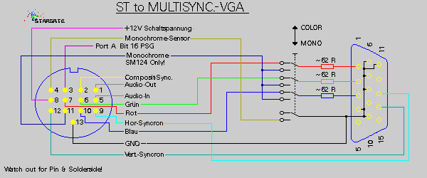

|
|
18.9.2 Multisync. Switch
Eine Mono/Color-Umschaltung für ST / VGA MultiSync
Hier finden Sie ein passendes Anschlußkabel für
Computer der Atari ST Serie das den Anschluß eines Atari ST an
einen handelsüblichen VGA- MultiSync-Monitor erlaubt.
Beachten Sie bitte das die Monitordetect-Leitung hier korrekt
beschaltet werden muß
Benutzen Sie dieses Kabel nur für MultiSync. Monitore
die auch ab 15Khz Bildfrequenz ein Bild korrekt
syncronisieren können. Beachten Sie bitte das bei 'Monochrom'
eine Bildwiederholfrequenz von 71Hz erzeugt wird!!
 Abbildung 1 - ST to VGA cable MulitSync.
Here you see a simple cable to connect you atari ST series
computer to a normal VGA MultiSync.-Display. Monitordetect
(Monochrome Sensor) must wired!
|
|
|